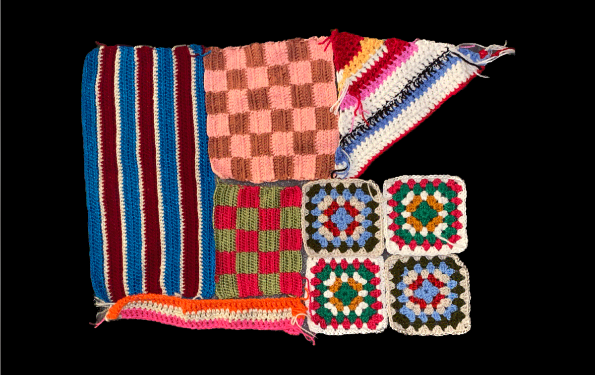
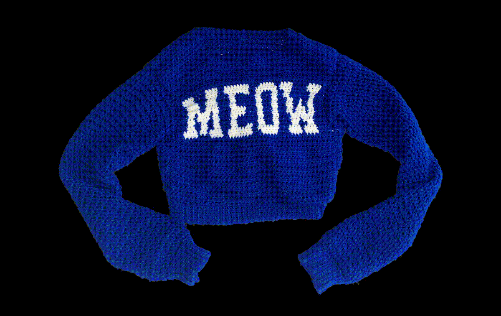

Jeewon made
Jogakbo
for
"her mental health"
 
Jogakbo
is made out of left-over crochet pieces. It was inspired by Korean traditional craft Jogakbo, which is a fabric made out of scrap silk pieces. Besides this Jogakbo, Jeewon also crocheted various things.
2023, 11*17"
back